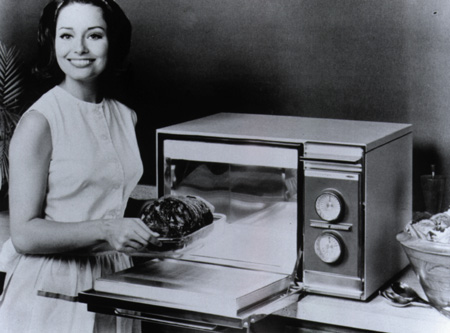

Micky's magnetron redt de avond
Ali G.
27-11-2004
In de vooravond van de alles beslissende wedstrijd in het Noorden werd de avond gered door de magnetron van Mick. Het zag er naar uit dat de gehele avond en daardoor de wedstrijd van morgen in de soep zou lopen door de afwezigheid van een alles beslissende magnetron. Gelukkig bleek de heer van der Giessen zich dit maal gedegen te hebben voorbereid. Na het vergeten van pakje en thermo op de novembervieren was hij nu door coach Hofstra streng toegesproken en helemaal klaar voor de strijd. De alles beslissende magnetron was reeds een dag voor vertrek in de auto van de familie van der Giessen geplaatst zodat deze niet vergeten kon worden. Na een lange rit richting Groningen en vervolgens een nog langere naar Aegir bleek hij bij aankomst al meteen nodig te zijn.
Bij aankomst in het stulpje voor de lichte twee zonders van Skoll bleken de heren van alle gemakken voorzien te zijn. Na een flinke stapel pannenkoeken en bekers yoghurt na binnen te hebben gewerkt was er geen tv, die toch zeer hard nodig is voor het uitbuiken na een goede stevige maaltijd. Gelukkig was daar Mick met zijn combi-magnetron en kon die meteen aangesloten worden op de kabel. De voorbereiding voor morgen kon verder gaan en nu kan er toch echt niets meer fout gaan.
